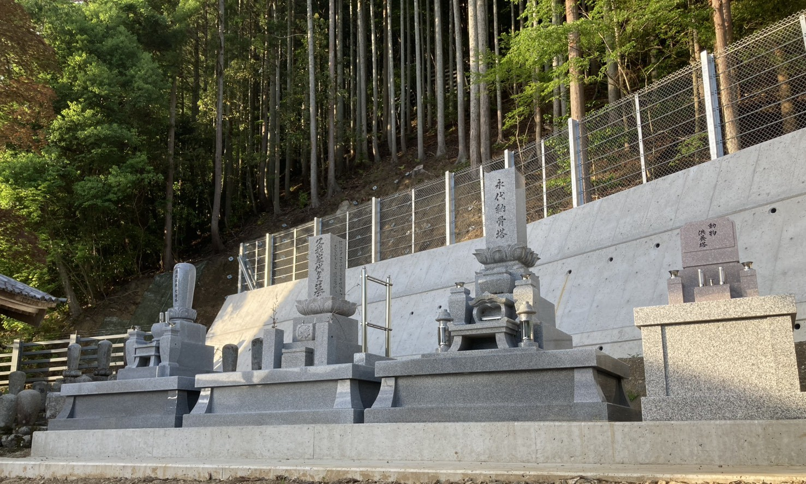

Eitai-kuyo Memorial Grave
This grave is intended for people who do not have someone to inherit a family grave, or who are concerned about the future management of a grave. The remains are placed in the memorial grave and cared for by Chozenji Temple.
This option may be suitable for those who do not wish to place the burden of grave care on their children or relatives, those looking for a place for burial, or those who wish to prepare during their lifetime.
Fee
¥200,000
Details about burial and memorial services will be explained during consultation.